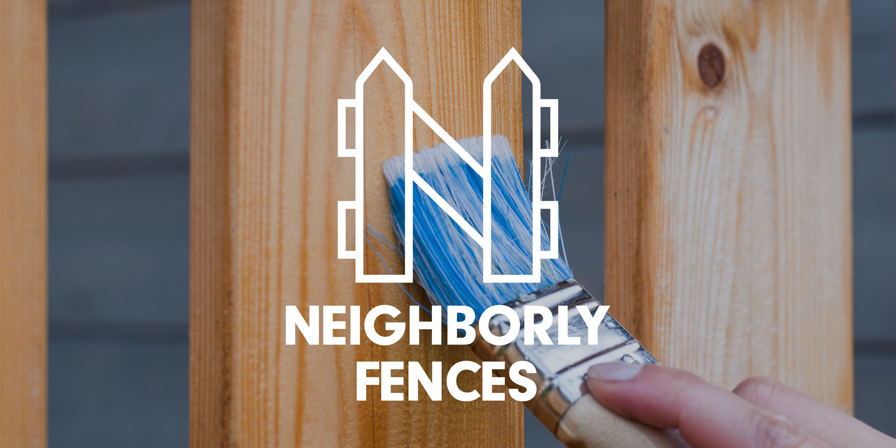
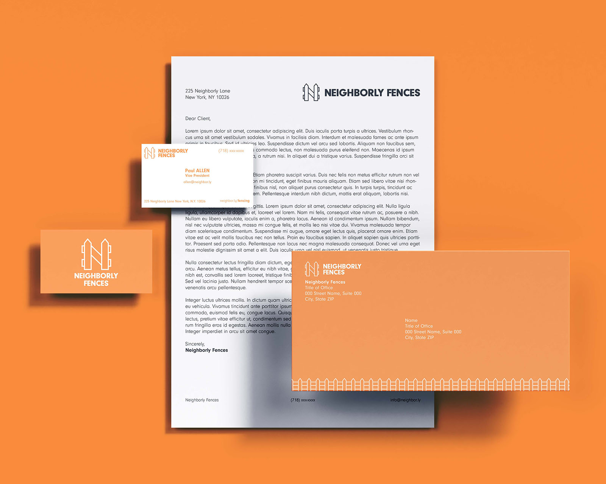

Neighborly Fences
March 2021 – Visual Identity

Neighborly Fences is a fictional company specializing in residential fences, gates, railings & commercial chain link fences in the New York City area.
As a family business, Neighborly Fences embodies themes of warmth and kindness which is reflected through the warm orange used as its main color. The orange is then also inspired by the oranges found naturally in wood, although somewhat exaggerated, solidifying the color choice for the visual identity. Furthermore, the logo uses the imagery of a fence to create the N symbolizing Neighborly Fences.
